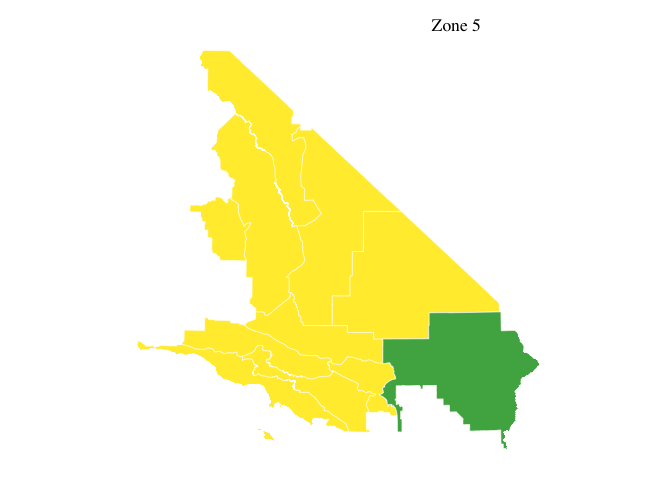
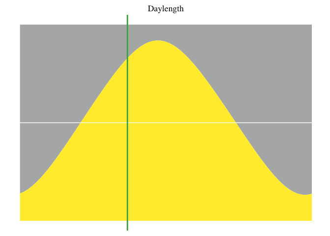

Pulling Sentinal 2 data
Ty Tuff, ESIIL Data Scientist 2023-10-27
Set Java Options
# Run these Java options before anything else.
options(java.parameters = "-Xmx64G")
options(timeout = max(600, getOption("timeout")))
R libraries and global setting.
#library(Rcpp)
library(sf)
library(gdalcubes)
library(rstac)
library(gdalUtils)
library(terra)
library(rgdal)
library(reshape2)
library(osmdata)
library(terra)
library(dplyr)
#library(glue)
library(stars)
library(ggplot2)
library(colorspace)
library(geos)
#library(glue)
library(osmdata)
library(ggthemes)
library(tidyr)
gdalcubes_options(parallel = 8)
sf::sf_extSoftVersion()
GEOS GDAL proj.4 GDAL_with_GEOS USE_PROJ_H
"3.11.0" "3.5.3" "9.1.0" "true" "true"
PROJ
"9.1.0"
gdalcubes_gdal_has_geos()
[1] TRUE
Start timer
start <- Sys.time()
Set color palette
library(ggtern)
our_yellow <- rgb2hex(r = 253, g = 201, b = 51)
our_green <- rgb2hex(r = 10, g = 84, b = 62)
our_grey <- rgb2hex(r = 92, g = 96, b = 95)
our_white <- rgb2hex(r = 255, g = 255, b = 255)
Load area of interest
# Read the shapefile into an sf object
aoi_total <- st_read("/Users/ty/Documents/Github/Southern_California_Edison_Fire_Risk/SCE_Fire_Zone_V2/SCE_Fire_Zone_V2.shp") %>%
st_as_sf()
Reading layer `SCE_Fire_Zone_V2' from data source
`/Users/ty/Documents/Github/Southern_California_Edison_Fire_Risk/SCE_Fire_Zone_V2/SCE_Fire_Zone_V2.shp'
using driver `ESRI Shapefile'
Simple feature collection with 12 features and 5 fields
Geometry type: POLYGON
Dimension: XY
Bounding box: xmin: 176062.4 ymin: 3674043 xmax: 764123.1 ymax: 4254012
Projected CRS: NAD83 / UTM zone 11N
# Plot the entire spatial dataset
plot(aoi_total)
# Filter the dataset to obtain the geometry with OBJECTID 5
aoi <- aoi_total %>%
filter(OBJECTID == 5)
# Obtain and plot the bounding box of the filtered geometry
shape_bbox <- st_bbox(aoi)
plot(aoi)

# Transform the filtered geometry to EPSG:4326 and store its bounding box
aoi %>% st_transform("EPSG:4326") %>%
st_bbox() -> bbox_4326
# Transform the filtered geometry to EPSG:32618 and store its bounding box
aoi %>% st_transform("EPSG:32618") %>%
st_bbox() -> bbox_32618
Arrange STAC collection
In this code chunk, the primary goal is to search for and obtain satellite imagery data. The data source being tapped into is a SpatioTemporal Asset Catalog (STAC) provided by an online service (earth-search by Element84). Here’s a breakdown:
A connection is established with the STAC service, searching specifically within the “sentinel-s2-l2a-cogs” collection. -The search is spatially constrained to a bounding box (bbox_4326) and temporally limited to a range of one day, between May 15 and May 16, 2021. -Once the search is conducted, the desired assets or spectral bands from the returned satellite images are defined, ranging from Band 1 (B01) to Band 12 (B12) and including the Scene Classification Layer (SCL). -These bands are then organized into an image collection for further processing or analysis.
# Initialize STAC connection
s = stac("https://earth-search.aws.element84.com/v0")
# Search for Sentinel-2 images within specified bounding box and date range
items = s %>%
stac_search(collections = "sentinel-s2-l2a-cogs",
bbox = c(bbox_4326["xmin"],
bbox_4326["ymin"],
bbox_4326["xmax"],
bbox_4326["ymax"]),
datetime = "2021-05-15/2021-05-16") %>%
post_request() %>%
items_fetch(progress = FALSE)
# Print number of found items
length(items$features)
[1] 12
# Prepare the assets for analysis
library(gdalcubes)
assets = c("B01", "B02", "B03", "B04", "B05", "B06",
"B07",
"B08", "B8A", "B09", "B11", "B12", "SCL")
s2_collection = stac_image_collection(items$features, asset_names = assets)
# Display the image collection
s2_collection
Image collection object, referencing 12 images with 13 bands
Images:
name left top bottom right
1 S2B_11SNS_20210515_1_L2A -117.0002 33.43957 32.44372 -115.8191
2 S2B_11SPS_20210515_1_L2A -115.9361 33.43490 32.42937 -114.7436
3 S2B_11SQS_20210515_0_L2A -114.8732 33.42092 32.41918 -113.9566
4 S2B_12STB_20210515_0_L2A -114.2244 33.40433 32.61015 -113.9559
5 S2B_11SNT_20210515_0_L2A -117.0002 34.34164 33.34577 -115.8066
6 S2B_11SPT_20210515_0_L2A -115.9253 34.33683 33.33091 -114.7198
datetime srs
1 2021-05-15T18:35:13 EPSG:32611
2 2021-05-15T18:35:10 EPSG:32611
3 2021-05-15T18:35:06 EPSG:32611
4 2021-05-15T18:35:01 EPSG:32612
5 2021-05-15T18:34:59 EPSG:32611
6 2021-05-15T18:34:55 EPSG:32611
[ omitted 6 images ]
Bands:
name offset scale unit nodata image_count
1 B01 0 1 12
2 B02 0 1 12
3 B03 0 1 12
4 B04 0 1 12
5 B05 0 1 12
6 B06 0 1 12
7 B07 0 1 12
8 B08 0 1 12
9 B09 0 1 12
10 B11 0 1 12
11 B12 0 1 12
12 B8A 0 1 12
13 SCL 0 1 12
Define view window
In this code chunk, a ‘view’ on the previously obtained satellite image collection is being defined. Think of this as setting up a specific lens or perspective to look at the satellite data:
-The view is set to the coordinate reference system EPSG:32618. -Spatial resolution is defined as 100x100 meters. -Temporal resolution is defined monthly (P1M), even though the actual range is only one day. -When there are multiple values in a grid cell or timeframe, they are aggregated using the median value. -If any resampling is needed, the nearest neighbor method is used (near). -The spatial and temporal extents are constrained to specific values. -By defining this view, it allows for consistent analysis and visualization of the image collection within the specified spatial and temporal resolutions and extents.
# Define a specific view on the satellite image collection
v = cube_view(
srs = "EPSG:32618",
dx = 100,
dy = 100,
dt = "P1M",
aggregation = "median",
resampling = "near",
extent = list(
t0 = "2021-05-15",
t1 = "2021-05-16",
left = bbox_32618["xmin"],
right = bbox_32618["xmax"],
top = bbox_32618["ymax"],
bottom = bbox_32618["ymin"]
)
)
# Display the defined view
v
A data cube view object
Dimensions:
low high count pixel_size
t 2021-05-01 2021-05-31 1 P1M
y 4471226.41402451 4741326.41402451 2701 100
x -3463720.00044994 -3191420.00044994 2723 100
SRS: "EPSG:32618"
Temporal aggregation method: "median"
Spatial resampling method: "near"
Pull data
In this chunk, the primary aim is to transform and prepare satellite imagery data for analysis:
-The current time is stored in variable a for tracking the time taken by the process. -The previously defined ‘view’ on the satellite imagery, v, is used to create a raster cube, a multi-dimensional array containing the satellite data. This raster cube contains spatial, spectral, and temporal data. -The desired spectral bands are selected. -The data is limited to a specific area of interest, aoi. -The band names are renamed to their respective wavelengths in nanometers for clarity. -A subset of the data, comprising 50,000 random samples, is selected. -Unwanted columns are removed, and the dataset is transformed into a long format, where each row represents a particular date and wavelength combination. -The entire process duration is computed by taking the difference between the end time (b) and the start time (a). -The transformed dataset y is then displayed.
# Record start time
a <- Sys.time()
# Transform the satellite image collection into a raster cube
x <- s2_collection %>%
raster_cube(v) %>%
select_bands(c("B01", "B02", "B03", "B04",
"B05", "B06", "B07", "B08",
"B8A", "B09", "B11", "B12")) %>%
extract_geom(aoi) %>%
rename(
"time" = "time",
"443" = "B01",
"490" = "B02",
"560" = "B03",
"665" = "B04",
"705" = "B05",
"740" = "B06",
"783" = "B07",
"842" = "B08",
"865" = "B8A",
"940" = "B09",
"1610" = "B11",
"2190" = "B12"
)
# Sample, transform and prepare data for analysis
y <- x %>%
slice_sample(n = 50000) %>%
select(-FID) %>%
pivot_longer(!time, names_to = "wavelength_nm", values_to = "reflectance") %>%
mutate(wavelength_nm = as.numeric(wavelength_nm))
# Record end time and compute duration
b <- Sys.time()
processing_time <- difftime(b, a)
# Display the processing time and transformed dataset
processing_time
Time difference of 1.23593 mins
y
# A tibble: 600,000 × 3
time wavelength_nm reflectance
<chr> <dbl> <dbl>
1 2021-05-01 443 1855
2 2021-05-01 490 2255
3 2021-05-01 560 2884
4 2021-05-01 665 3711
5 2021-05-01 705 3990
6 2021-05-01 740 4009
7 2021-05-01 783 4078
8 2021-05-01 842 4219
9 2021-05-01 865 4060
10 2021-05-01 940 4120
# ℹ 599,990 more rows
Base plot
# Set custom colors for the plot
our_green <- "#4CAF50"
our_white <- "#FFFFFF"
our_yellow <- "#FFEB3B"
# Create a 2D density plot
day_density <- ggplot(data = y, aes(x = wavelength_nm, y = reflectance, group = time)) +
stat_smooth(color = our_green, fill = "lightgrey") +
geom_density2d(colour = "black", bins = 10, alpha = 0.1) +
stat_density2d(aes(alpha = ..level.., fill = ..level..),
linewidth = 2, bins = 10, geom = "polygon") +
scale_fill_gradient(low = our_white, high = our_yellow) +
scale_alpha(range = c(0.00, 0.8), guide = FALSE) +
theme_tufte() +
xlab("wavelength") +
ylab("reflectance") +
ylim(0, 16000) +
theme(
aspect.ratio = 5/14,
axis.text.x = element_text(angle = 90, vjust = 0.5, hjust = 1,
colour = c("darkblue", "blue", "green", "red",
"darkred", "darkred", "darkred", "darkred",
"darkred", "black", "black", "black", "black")),
axis.title.x = element_blank(),
axis.title.y = element_blank(),
plot.margin = margin(t = 30, r = 10, b = 40, l = 18)
) +
scale_x_continuous(breaks = c(443, 490, 560, 665, 705, 740, 783, 842, 865, 940, 1610, 2190))
# Display the plot
day_density

Inlay 1 - geographic zone
guide_map <- ggplot(data= aoi_total) +
geom_sf(fill=our_yellow, color=our_white) +
geom_sf(data= aoi, fill=our_green, color=our_white) +
theme_tufte()+
ggtitle("Zone 5")+
theme(axis.text.x=element_blank(), #remove x axis labels
axis.ticks.x=element_blank(), #remove x axis ticks
axis.text.y=element_blank(), #remove y axis labels
axis.ticks.y=element_blank() #remove y axis ticks, bg=none
)+ theme(plot.title = element_text(hjust=0.8, vjust = -2))
guide_map

Inlay 2 - date text
library(geosphere)
aoi_total |> st_centroid() |> st_transform(crs="+proj=longlat") |> st_coordinates() |> colMeans() -> lat_long
daylength_line <- daylength(lat = lat_long[2], 1:365)
daylengths <- data.frame(time= 1:365, daylength = daylength_line)
library(lubridate)
# Create a template date object
date <- as.POSIXlt("2021-05-15")
doy <- format(date, format = "%j") |> as.numeric()
display_date <- format(date, format="%e %B %Y ")
Inlay 3 - daylength
date_inlay <- ggplot(data=daylengths) +
ggtitle("Daylength")+
geom_ribbon(aes(x=time, ymin=daylength, ymax=15), fill=our_grey, alpha=0.5) +
geom_ribbon(aes(x=time, ymax=daylength, ymin=9), fill=our_yellow, alpha=1) +
geom_hline(yintercept=12, color=our_white) +
geom_vline(xintercept=doy, color=our_green, size=1) +
theme_tufte() +
ylim(9,15) +
theme(axis.text.y=element_blank(),
axis.ticks.y=element_blank(),
axis.title.y=element_blank(),
axis.title.x=element_blank(),
axis.text.x=element_blank(),
axis.ticks.x=element_blank()) + theme(plot.title = element_text(hjust=0.5, vjust = 0))
date_inlay

Ensemble map assembly
library(cowplot)
library(magick)
map_overlay <- ggdraw(day_density) +
draw_plot(guide_map, x = 1.08, y = 1, hjust = 1, vjust = 1, width = 0.3, height = 0.3)+
draw_plot(date_inlay, x = 1, y = 0.35, hjust = 1, vjust = 1, width = 0.1, height = 0.25)+
geom_text(aes(x=1, y=0.08, label=display_date, hjust = 1), color=our_grey, cex=3, fontface='bold') +
# draw_image("Ty_powerline_plots/Southern_California_Edison_Logo.png", x = -0.24, y = 0.38, scale=.3)+
# draw_image("Ty_powerline_plots/earthlab_logo.png", x = -0.38, y = 0.38, scale=.25)+
geom_text(aes(x=0.4, y=.9, label="Spectral library - Monthly average"), color=our_green, hjust = 0, cex=8, fontface='bold') +
geom_text(aes(x=0.01, y=.04,
label="Created by ESIIL (T. Tuff) for Fall Hackathon -- October 2023. Sentinel 2 Data from 'https://earth-search.aws.element84.com/v0'"), color=our_grey, hjust = 0, cex=3) +
geom_text(aes(x=0.4, y=.1, label="wavelength (nm)"), color=our_grey, hjust = 0, cex=4, fontface='bold') +
geom_text(aes(x=0.01, y=.5,angle = 90, label="reflectance"), color=our_grey, hjust = 0, cex=4, fontface='bold')
map_overlay
Save map
ggsave(map_overlay, file="day_density_15_May_2021_zone_5.png", bg="white", dpi = 600, width = 12,
height = 5)
End timer
end <- Sys.time()
difftime(end,start)
Time difference of 3.2202 mins